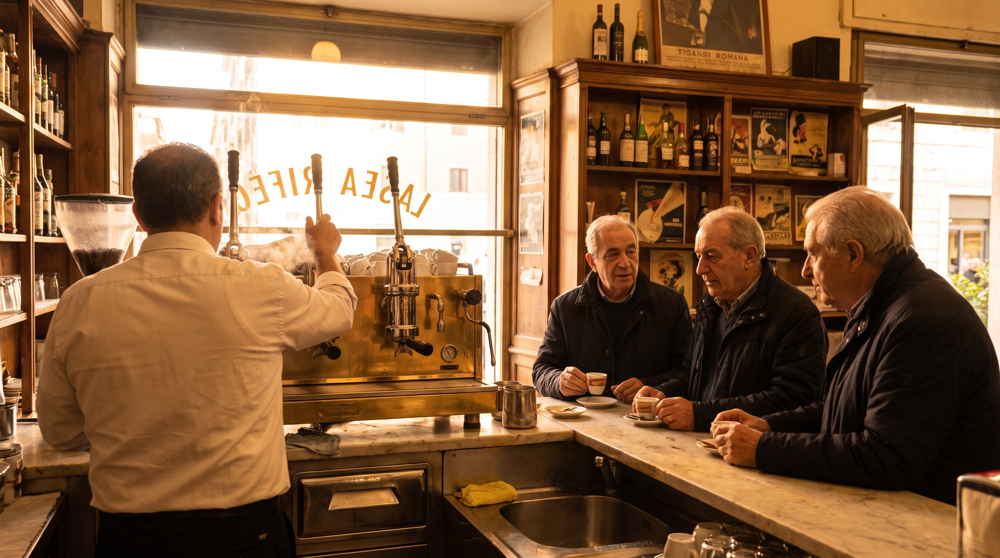

Marco makes the language patient
I had tried three apps before I found Marco. She teaches like an adult teaching another adult. I finally have Italian I can use.

Diane Whitfield
Portland, Oregon
Marco grew up in the Prati neighbourhood of Rome, five streets from St Peter's, in a family of teachers. He studied linguistics at Sapienza, wrote a thesis on how adults acquire a second phonology, and has taught Italian to adults ever since. He teaches from a study lined with paperbacks and one framed photograph of his grandfather, who was also a Roman teacher.
Every teacher on our faculty teaches from one Italian region and from one only. That is not a marketing point. It is what allows a class to have a place. When Marco opens a lesson at seven in the morning her time, the light behind her is Roma light. The bread on her desk was bought at a Roma bakery. The vocabulary that emerges in a conversation about weekends is Lazio vocabulary. Students on the other side of the world tell us the same thing, class after class. They are not on a language platform. They are in Roma, for eighty five minutes.
Regional Italian is not dialect. Marco teaches the standard national language, the Italian of newspapers and universities and the state broadcaster. What she brings is location. A verb form is illustrated with a scene from her city. A grammar point is drawn out of a conversation that could have taken place on her street. The language stays standard. The teaching room is specific.

I love the first class. I love the moment a person who has never spoken Italian says buongiorno back to me and hears their own voice make a sound they did not make yesterday. That is why I only teach beginners. I know how to hold that room. I know how much silence a new speaker needs before they will try, and how much English I need to drop out of the class in month two, and how to write on the shared screen so a person on their sofa in Los Angeles feels they are in a room with me. Rome is a beginner city. Everyone in Rome starts somewhere. I teach as a Roman.
Every teacher on this faculty holds a formal Italian-as-a-foreign-language qualification from an Italian university. That is a non negotiable in our hiring. It is not the whole of the class, but it is the floor. What the students hear in the lesson is built on this training, and on years of teaching adults in exactly this format.
Ask us for the paper credentials. We share them.
I had tried three apps before I found Marco. She teaches like an adult teaching another adult. I finally have Italian I can use.
Eighty five minutes in a class with Marco feels like eighty five minutes in Roma. That is the whole reason it worked for me.

I was afraid the novelty would wear off. It hasn't. Marco keeps changing the shape of the class so it never gets stale.

Every teacher on the faculty holds a fixed teaching load. This is Marco's.
Times are shown in New York time. All classes are live from Roma.
One native teacher from Roma, live from Lazio, in a small group of adults who mean it.